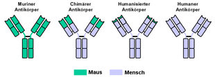

Monoklonale Antikörper
Polyklonale Antikörper
„poly“: viel, „klonal“: (junge) Art --> viele Arten an
Antikörpern
viele verschiedene Antikörper
polyklonale Antikörper sind z.B. ein Resultat der
natürlich vorkommenden Immunantwort
Monoklonale Antikörper
„mono“: einzig, „klonal“: (junge) Art --> eine einzige
Art an Antikörpern
identische Antikörper, die eine identische Spezifität
für dasselbe Epitop besitzen und indirekt von einem
einzigen B-Lymphozyten abstammen
Herstellung
Erste Publikation über massenhafte Herstellung von MAKs
im Jahr 1975
Hybridom-Technik
Prinzip: identische B-Lymphozyten massenhaft
klonieren und hieraus MAKs gewinnen
Problem: kurze Lebensdauer von
B-Lymphozyten
Lösung: Verschmelzung von B-Lymphozyten mit
unbegrenzt teilungsfähigen Myelom-Zellen
(Tumorzellen) --> Entstehung von Hybridomzellen,
die unbegrenzt monoklonale Antikörper einer
bestimmten Spezifität produzieren
Genauer Ablauf
1. Infizieren einer Maus mit dem
Antigen
2. Immunantwort der Maus: Bildung von
B-Lymphocyten
3. Entnahme von B-Lymphocyten aus der Milz der
Maus
4. Entnahme von Myelom-Zellen
5. Fusionieren von B-Lymphocyten und
Myelom-Zellen zu Hybridomzellen
6. Selektion von Hybridomzellen (durch Abtötung
von unfusionierten B-Lymphocyten und
Myelom-Zellen)
7. Separation der Hybridomzelllinien
8. Selektion der korrekten (zum gewünschten
Epitop passenden) Hybridomzelllinie
9. Massenhafte Produktion von MAKs in vitro
(Bioreaktoren) oder in vivo (Injizieren der
Hybridomzelllinie in Mäuse)
Einsatzgebiete
Diagnostik
Identifizierung einzelner Antigene in komplexen
Mischungen durch die Bindung der MAKs an ein Epitop des
Antigens und das Nachweisen dieser Antikörperbindung
durch unterschiedliche Techniken
z.B. Bestimmung von Blutkomponenten oder Tumormarkern
Schwangerschaft-Schnelltest: Nachweis der Bindung von
MAKs an das vom sich entwickelnden Embryo gebildete
Hormon HCG
Therapie
Verwendung von MAKs zur Neutralisation, Agglutination und Präzipitation von Antigenen
Versuche zum Einsatz von MAKs in der Tumortherapie
(bisher jedoch noch nicht
erfolgreich):
Grundidee: MAKs gegen Tumorzellen mit einem
Giftstoff koppeln; dieser Antikörper-Toxin-Komplex
(Immunotoxin) soll Krebszellen selektiv an
Krebszellen binden und diese durch das Toxin
zerstören
zahlreiche Schwierigkeiten bei der praktischen
Umsetzung
Lösung: Verschmelzung von B-Lymphozyten mit
unbegrenzt teilungsfähigen Myelom-Zellen
(Tumorzellen) --> Entstehung von Hybridomzellen,
die unbegrenzt monoklonale Antikörper einer
bestimmten Spezifität produzieren
Probleme bei therapeutischer Verwendung
Problem: verwendete Antikörper der Maus werden vom
menschlichen Immunsystem als fremd erkannt und wirken
selbst als Antigene --> Bildung von Antikörpern gegen die
MAKs --> MAKs können ihre therapeutische Wirkung nicht
entfalten, potentielle Folgen: grippeähnliche Symptome
bis zu schwere Schockzuständen
Lösung: Humanisierung der mittels Mäusen hergestellten
MAKs durch den Einbau von Teilen künstlich produzierter menschlicher MAKs
mittels Gentechnologie
Terminologie
Suffix aller therapeutischer monoklonaler Antikörper:
-„mab“ („monoclonal antibody“)

murine Antikörper (vollständig von Maus): -„omab“
chimäre Antikörper (ausschließlich variabler Teil von
Maus): -„ximab“
humanisierte Antikörper (ausschließlich Paratop von
Maus): -„zumab“
humane Antikörper (vollständig von Mensch):
-„umab“